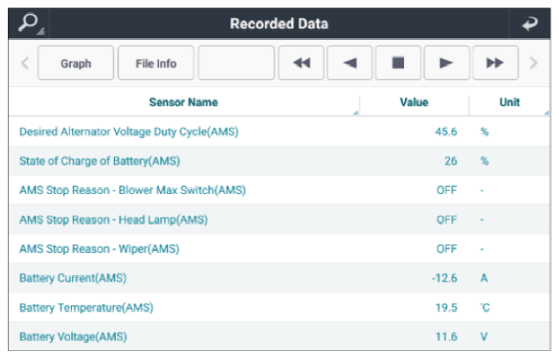
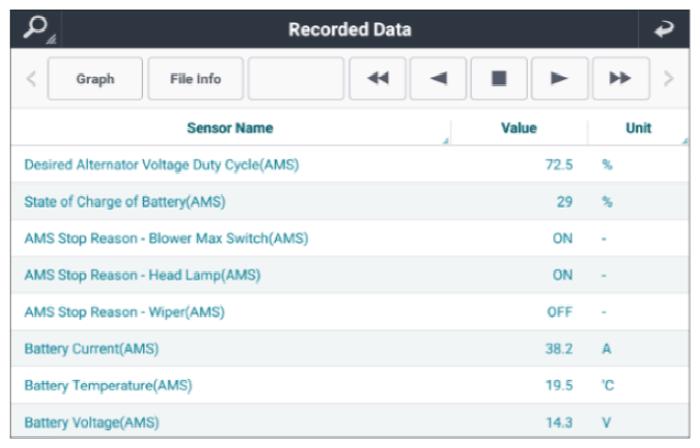

Monitor Current Data
WARNING: This page is about a different variant/trim than selected.
- Ignition "OFF"
- Connect GDS to Data Link Connector (DLC).
- Ignition "ON" & Engine "ON"
- Monitor following parameters in "Current Data" with GDS.
Specification:
Refer to Figure below
 Courtesy of HYUNDAI MOTOR AMERICA
|
 Courtesy of HYUNDAI MOTOR AMERICA
|